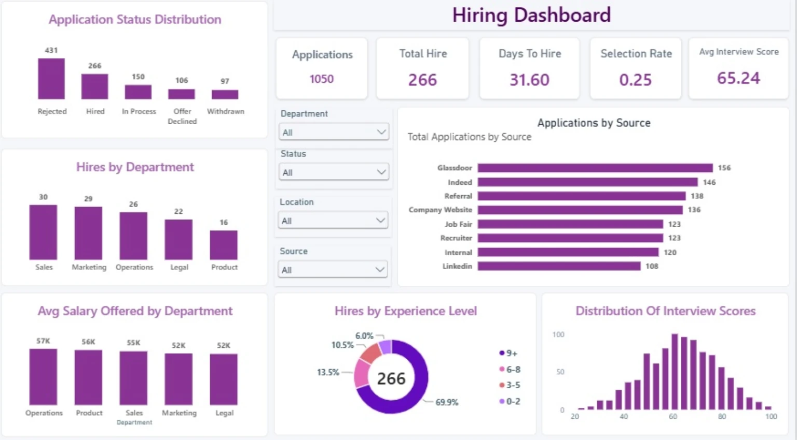

What the analysis set out to answer
Explore recruitment demand, hiring funnel performance, sourcing channels, and differences across departments.
Analyzing hiring demand, candidate pipelines, recruitment costs, and time-to-fill across departments and locations.
Explore recruitment demand, hiring funnel performance, sourcing channels, and differences across departments.
Developed complementary vacancy and hiring dashboards with filters for department, location, status, and other recruitment dimensions.
Helps structure discussions around hiring capacity, recruitment timelines, and channel performance, subject to reconciling metric definitions.


Portfolio analysis based on supplied dashboard screenshots. Figures are descriptive, not verified business improvements. Dataset provenance, metric definitions, technical implementation, and commercial permissions should be confirmed before making stronger claims.